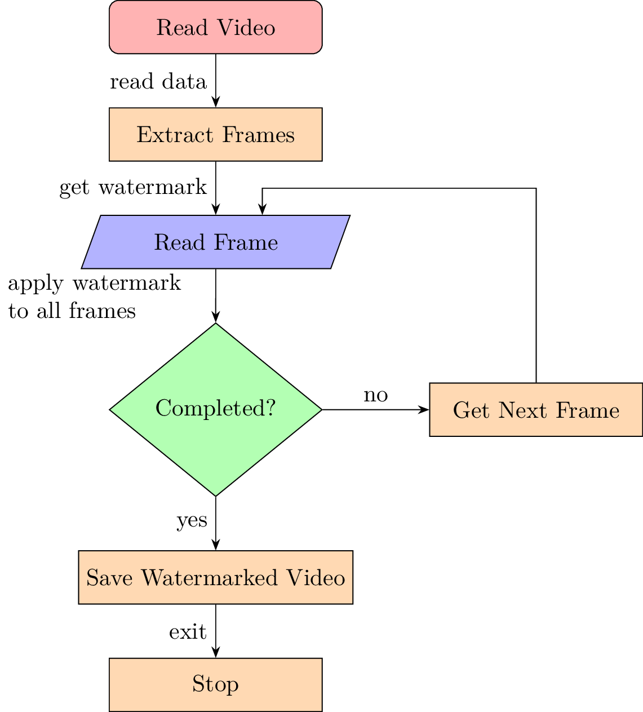

\documentclass{standalone}
\usepackage{tikz}
\usetikzlibrary{arrows.meta,
calc, chains,
quotes,
positioning,
shapes.geometric}
\begin{document}
\begin{tikzpicture}[
node distance = 8mm and 16mm,
start chain = A going below,
base/.style = {draw, minimum width=32mm, minimum height=8mm,
align=center, on chain=A},
startstop/.style = {base, rectangle, rounded corners, fill=red!30},
process/.style = {base, rectangle, fill=orange!30},
io/.style = {base, trapezium,
trapezium left angle=70, trapezium right angle=110,
fill=blue!30},
decision/.style = {base, diamond, fill=green!30},
every edge quotes/.style = {auto=right}]
]
\node [startstop] {Read Video}; % <-- A-1
\node [process] {Extract Frames};
\node [io] {Read Frame};
\node [decision] {Completed?};
\node [process] {Save Watermarked Video};
\node [process] {Stop}; % <-- A-6
%
\node [process, % <-- A-7
right=of A-4] {Get Next Frame};
%%
\draw [arrows=-Stealth]
(A-1) edge["read data"] (A-2)
(A-2) edge["get watermark"] (A-3)
(A-3) edge[text width=3cm,"apply watermark to all frames "] (A-4)
(A-4) edge["yes"] (A-5)
(A-5) edge["exit"] (A-6)
(A-4) edge["no"'] (A-7) % <-- by ' is swapped label position
(A-7) |- ($(A-2.south east)!0.5!(A-3.north east)$)
-| ([xshift=7mm] A-3.north)
;
\end{tikzpicture}
\end{document}Created by David Li